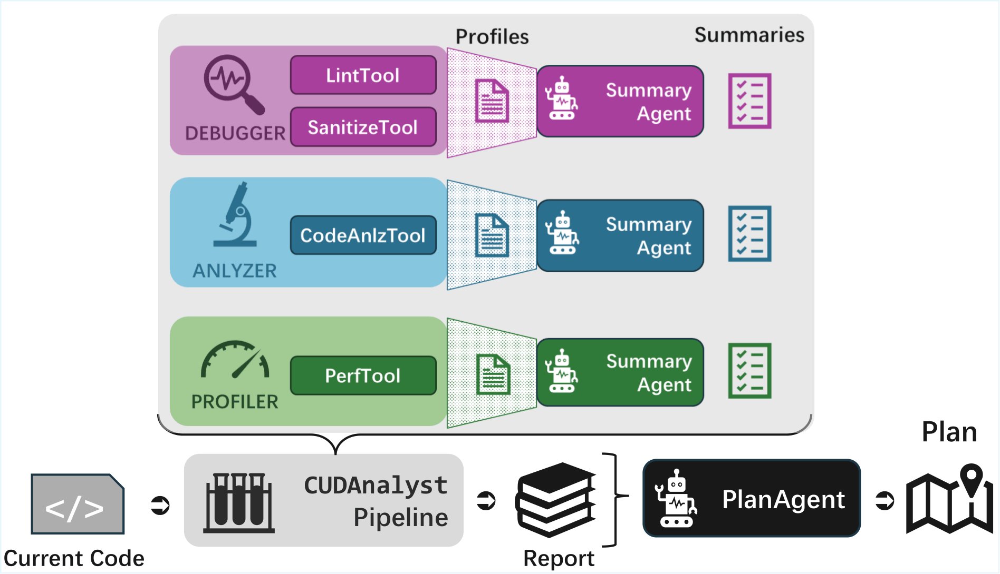
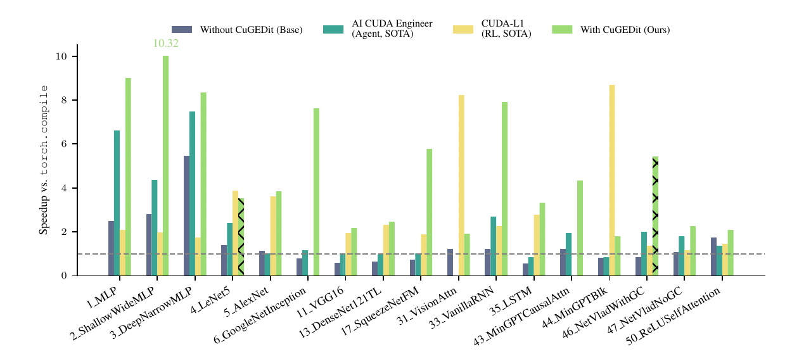

Towards Feedback-to-Plan Decisions for Self-Evolving LLM Agents in CUDA Kernel Generation
论文笔记: Towards Feedback-to-Plan Decisions for Self-Evolving LLM Agents in CUDA Kernel Generation
1. 背景信息
- 作者与团队：Yee Hin Chong、Jiaming Wu、Youhui Zhang、Peng Qu；清华大学计算机系、北京信息科学与技术国家研究中心。
- 发表：ICML 2026；本笔记依据 2026-05-26 的 arXiv v1，官方页面仍注明 camera-ready in progress。
- 材料：论文与版本 · 官方全文 · PDF · 作者代码。已阅读正文及附录 A–E，并用 PDF 核对关键图表和提示词；未运行 CUDA 实验。
值得记住的四点：
- 贡献首先是测量方法：CUDAnalyst 冻结程序和上下文，在同一决策点替换反馈，测量下一步结果，避免端到端消融把不同演化路径混在一起。
- 显式规划的收益依赖反馈是否匹配当前程序：在代表性设置中，没有反馈的计划反而有害；空计划和错配反馈对照比“加一个 planner 后分数变高”更有说服力。
- 工具价值依赖组合、模型和程序状态：不能依据单工具贡献小就删除它，也不能把非加性交互一律解释成正向协同。
- 摘要和强模型计划能帮助弱模型利用反馈，但不是参数学习：推理时注入计划有收益；长期自演化、普遍的规划机制以及同预算最优性仍未被证明。
我的判断：最值得复用的是“冻结状态 → 干预反馈 → 重新执行”的实验接口；把观察到的工具分工上升为普遍规律则需要更谨慎。 下文会保留原文叙述、公式与图表之间几处会影响这一判断的差异。
2. 关键问题：删掉 profiler 后最终变慢，究竟是哪一步需要它？
Golden Case——为便于理解构造，非论文实测 trace。
一个 agent 正在优化分块矩阵乘法。当前 kernel 能通过检查，但共享内存开销较大、occupancy 偏低。静态分析显示 tile 与循环结构；profiler 显示资源占用和停顿；debugger 没有报错。
如果只看性能指标，agent 可能选择缩小 tile；结合循环结构，它也可能发现减少展开就能缓解寄存器压力。debugger 的“当前无错”则为保持正确性提供参照。这里真正要问的是：哪组证据帮助它选中了有效且安全的修改？
常规消融从头关闭 profiler，重新演化，再比较最终最快 kernel。问题是，第一次反馈差异就可能改变代码、候选选择、后续参考程序；若干轮之后，两组已经在处理不同问题。最终速度差不能直接解释为“当前这一步使用 profiler 的效果”。§1、§3.2，Figure 1
这里需要分清两个问题：端到端实验可以评估关闭工具后的整个系统表现；固定状态的干预才能更直接回答某次决策需要什么信息。 CUDAnalyst 针对后者，牺牲跨代状态变化，换取局部比较的可解释性。
3. 关键方法：在同一程序上枚举反馈组合，再测计划落实后的结果
3.1 沿同一个 kernel 走完一次干预
延续矩阵乘法例子，CUDAnalyst 的流程是：
- 冻结决策前状态：保存当前 kernel、参考程序和已有上下文。同一次比较不重新抽参考程序，也不让干预结果写回后续演化轨迹。
- 构造可开关的证据：对同一程序保存 debugger、analyzer、profiler 的结构化报告。
- 只改反馈组合：例如比较“只给 profiler”和“给 analyzer + profiler”，其余模型、prompt、解码和评测流程保持相同。若启用摘要，则先由各工具对应的 SummaryAgent 解释报告。
- 生成计划并落实成代码：PlanAgent 综合报告，输出修改优先级和步骤；代码生成模型按计划改写 kernel。在构造例子中，可能输出“先减少过度展开，保持数据布局，再验证正确性和资源占用”。这只是机制示意，不代表作者实际得到该计划。
- 重新编译、验证与计时：每个样本最多尝试 5 次，记录是否至少一次达到相应结果；然后回到原冻结状态，测试另一组反馈。
因此，归因对象是反馈变化经由计划和代码生成后，对执行结果的条件效应，不是对计划文本的人工评分，也不是对模型内部推理电路的解释。§3.1–3.3、Appendix B.1

Figure 2 要看的是 Report → PlanAgent 这个接口：把诊断报告与决策拆开，才能对报告做干预。图中的摘要模块可关闭。另一个容易读错的细节是，图注称报告为规划的唯一输入，但 Prompt D.10 实际还包含 Source Code / <RAWCODE>；更准确的理解是源代码属于固定上下文，反馈是被操纵的输入，不能据图注声称 planner 完全不看代码。§3.1；PDF p.31，Prompt D.10
3.2 模块到底提供什么？哪些行为已经写在 prompt 里？
| 模块 | 实际实现与输出 | 对例子的作用 |
|---|---|---|
| Debugger，记作 $d$ | clang-tidy 18.0.0、Compute Sanitizer 2023.2.0；静态警告、内存访问与并发检查 | 约束修改的安全性，定位越界或竞争 |
| Analyzer，记作 $a$ | Tree-sitter 0.25.2 / Language Pack 0.13.0；提取循环结构 | 把性能问题定位到可改变的循环、索引和组织方式 |
| Profiler，记作 $p$ | Nsight Compute 2025.2.1；硬件性能报告，选相对加速最差的运行配置采样 | 判断资源占用、访存、停顿等瓶颈 |
| SummaryAgent | LLM 读取源码和对应工具报告，产生解释与修改建议 | 降低报告理解负担，但也引入 LLM 的诊断偏置 |
| PlanAgent | LLM 综合报告、排序问题并给出执行路线 | 协调可能冲突的修改，比如展开与寄存器压力 |
来源：Appendix D.1、Table 10、Prompts D.1–D.10。实现先进行 lint / sanitizer 验证，对可执行程序再做结构分析和 profiling；不是任何失败程序都天然拥有完整三路运行证据。
所有 LLM 模块使用评测前固定的 prompt 和解码配置；本文没有训练一个新的规划网络，也没有在线更新权重。所谓 self-evolving 主要是外部程序与搜索状态迭代。§4、Appendix D.4
Prompt D.10 中决定行为的一句原文是：
“Prioritize fixing Sanitizer errors first, followed by major Perf bottlenecks.”
随后模板明确要求三步：先解决正确性问题，再改变循环或访存模式，最后微调指令和 occupancy；Prompt D.9 还要求跨工具关联和冲突检查。这既解释了为什么 planner 能把报告变成动作，也限制了“阶段分工是模型自主发现的”这一解释。PDF p.31
3.3 用 Banzhaf 区分“平均有用”与“组合才有用”
对冻结的第 $g$ 代，令 $v_g(S)$ 表示启用反馈集合 $S$ 后，固定尝试预算下某个执行指标的期望表现。令 $N=\{d,a,p\}$，三类工具需要评估 8 个集合，包括空集合和完整集合。工具 $i$ 的 Banzhaf 值是：
它把“在其他工具的每一种组合上加上 $i$”的收益等权平均。于是 debugger 单独没帮助，不意味着它在 analyzer / profiler 已出现时也没帮助。这个数不是关闭完整系统中该工具的一次消融差，也不应直接读成最终加速比。§3.4，Eq.1
正文 Eq.2 把两工具交互写成：
正值表示二者一起出现的收益超出单独收益相加；负值可能是冗余或干扰。作者选择 Banzhaf 的理由是反馈同时呈现，但数学上的实质区别是对联盟等权，而非 Shapley 的联盟大小加权；“没有呈现顺序”本身并不排除使用 Shapley。
复现前必须核对的定义差异：附录 Eq.7 在上式后额外减去 $\sigma_{dap}/3$，其中 Eq.8 定义
这是与正文 Eq.2 不同的两两交互口径。论文未清楚解释这一步修正的依据 [?]；不能把 Tables 4–7 中的两两交互直接当作正文式的数值，也不能把 Banzhaf 值和所有交互项随意相加当成总收益。最稳妥的复现材料应包含原始 8 个 $v_g(S)$，而不只是归因表。Appendix B.3，PDF p.18
4. 数据与设置：冻结的是参考轨迹，不是让四个模型各自重跑优化
主分析使用完整 PolyBench-ACC、NVIDIA RTX 4090 和 OpenEvolve。MINI_DATASET 用于正确性检查，SMALL 至 EXTRALARGE 用于性能评估；每个规模预热 3 次、测量 10 次，取各规模相对官方实现加速比的最小值作为整体改进。主图汇总 10 次独立运行，阴影为跨运行的 95% 置信区间。§4、Appendix B.1
参考轨迹由 GLM-4.5-Air 生成。干预时分别用 DeepSeek-V3.2（关闭 thinking）、Qwen3-Coder-30B-A3B、DeepSeek-R1-0528、Qwen3-235B-A22B-32K 重新评估；作者把前两者视为弱推理组、后两者视为强推理组。这样减少了“模型恰好适应自己代码风格”的混杂，但作者也排除了接近最优、几乎没有反馈改进空间的轨迹，因此不是对任意生产状态的无偏抽样。
参考演化是单 island、200 iterations；Table 2 仍设置 population size 25、archive size 12。单 island 不等于单个程序，200 iterations 也不等于主图的 0–7 共 8 个 generation。 论文没有在这里给出可核验的逐代总样本数与完整映射 [?]。
指标需特别小心：一次执行按最高满足条件分为 failed / compiled / pass / fast；样本有最多 $k=5$ 次代码生成机会。正文描述总体成功为至少一次达到 pass 或 fast。附录图表还拆分结果类别，因而 pass 类别减少可能伴随 fast 增多，不能自动解释成正确率下降；compiled 类别为零也不表示所有程序都编译失败。 复现应同时保存互斥类别和累计“至少通过正确性检查”指标。§3.3、Appendix B.1–B.3
5. 关键结果：反馈匹配比“先写一段计划”更重要
5.1 最强证据：规划与反馈的交叉对照
RQ0 交叉比较显式规划 $P$ 和反馈 $F$：Base 为 NP+NF，其余三组为 P+NF、NP+F、P+F。这里 NP 仍允许模型在代码生成中隐式规划，只是不单独调用 PlanAgent。
Figures 3–4 的主要现象：P+F 通常较好；P+NF 缺乏稳定收益。把计划替换为相似长度、固定格式的 DummyPlan，主要损害弱模型；将反馈在同代不同程序间随机交换，保留反馈量但破坏匹配，四种模型都明显受损。这个设计支持“收益需要有意义且匹配的证据”，而不仅是更多上下文 token。强模型对空计划相对不敏感，也说明显式计划文本不是在所有模型上都同样重要。§4.1、Appendix B.2
一个可核查的定量例子来自 Table 3(a)，DeepSeek-V3.2，第 7 代：$\phi_P=0.095$，$\phi_F=0.015$，$\sigma_{FP}=0.430$。利用该两玩家游戏的 Eq.3–5，可由表内舍入值反推出：
| 比较 | 对总体成功率的差值 |
|---|---|
| 有反馈时增加规划：P+F − NP+F | 约 +31.0 个百分点 |
| 无反馈时增加规划：P+NF − NP+NF | 约 −12.0 个百分点 |
计算分别为 $\phi_P+\sigma_{FP}/2$ 与 $\phi_P-\sigma_{FP}/2$。这是笔记者依据表格计算的单代差值，不是论文报告的全任务平均提升。 它具体说明：同一个 planner，在不同反馈条件下可以从有害变成有益。
也不能把正文的“持续正协同”照单全收：Table 3(d) 中 Qwen3-235B-A22B 第 2–4 代的 $\sigma_{FP}$ 分别为 −0.147、−0.026、−0.185。合理结论是存在重要交互，而非每代都正向协同。
5.2 工具组合有价值，但没有跨模型固定不变的贡献排名
RQ1 在固定 planner 下枚举 $d,a,p$ 的全部组合，分别观察 compiled、pass、fast。作者概括为结构分析帮助编译、profiling 帮助性能、debugging 常通过交互发挥作用；附录显示实际模式更不均匀。
- 正向例子：Table 4(a) 中，V3.2 第 0 代 analyzer 的 compiled 类别 Banzhaf 值为 0.222，高于 debugger / profiler 各 0.056，符合结构信息有用的解释。
- 反例与边界：同模型第 7 代，Table 4(b) 的 pass 三阶交互为 −0.500；Qwen3-Coder-30B 第 7 代的 compiled、fast 归因项均为零，但 pass 的 debugger 边际值为 −0.444（Table 5）。不能概括成“交互随代数单调增强”，也不能将某一结果类别上的零贡献推成工具完全无用。
这些结果足以支持工具价值依赖状态和组合。至于负值究竟意味着信息干扰、结果类别迁移还是采样波动，需要原始 coalition 结果和相应区间；归因表没有为每个数附置信区间。§4.2、Tables 4–7
5.3 摘要改善反馈利用，强模型计划可以部分迁移
RQ2 比较 P+F、P+S 和 NP+S，主要支持弱模型更受益于摘要，以及摘要存在时显式规划仍有额外贡献。一个定义细节是 Appendix B.4 明确写 raw feedback 始终存在，因此 $S$ 应理解为摘要组件的开关，不能直接讲成“把原始报告完全替换成短摘要”。
Table 8(a) 中，V3.2 第 7 代 $\phi_S=0.268$、$\phi_P=0.222$、$\sigma_{SP}=-0.177$。用同一两玩家公式反推，已有摘要时增加规划仍带来约 +13.4 个百分点的总体成功率差值。这支持摘要没有覆盖规划的全部收益；但摘要并非总是正向，Qwen3-Coder-30B 第 4、5 代的 $\phi_S$ 分别为 −0.050、−0.033。Figure 6、Table 8
RQ3 将强模型计划注入弱模型的代码生成上下文，保持上下文长度和解码配置固定。Figure 7、Figures 21–22 显示弱模型通常优于自写计划，同家族传递收益更大，例如 R1 → V3.2；总体仍未稳定追平强模型。作者把个别“学生超过老师”解释为更保守地执行计划、减少错误，这是对 pass / fast 分布的解释，不是直接测得的行为机制。
这里的 distillation 是推理时传递计划，没有 teacher–student 参数训练。实验支持计划可作为跨模型接口，不支持“弱模型已经学会强模型的推理能力”。§4.4、Appendix B.5
5.4 工程落地 CuGEdit：能提速，但不能把峰值当作全套任务结论
CuGEdit 是将分析转成策略的附录 case study：先要求正确；再用当前与参考 kernel 的基本块控制流图相似度 $s$ 判断阶段。四种 GraKeL 图核分数取平均，阈值设为 0.42：低相似度时注入参考程序的结构摘要，高相似度时提供当前程序的细粒度 profiling。强模型生成摘要和计划，弱模型写代码；昂贵摘要只在样本被选为参考且尚无摘要时生成，并缓存复用。Appendix E.2–E.3
在 A800、KernelBench Level 3 上，Base 和 CuGEdit 都用 V3.2 生成代码，后者额外用 R1 规划。作者报告相对 torch.compile 的 2.08×–10.32× 加速，以及相对 Base 约 40% 更少的收敛迭代；预热 / 测量次数为 32 / 128，允许混合精度但做数值检查。Appendix E.4

Figure 29 应同时看峰值和不占优的柱子：浅绿色是 CuGEdit，虚线为 torch.compile；DeepNarrowMLP 标出 10.32×，但 VisionAttn 和 MinGPTBlk 上黄色 CUDA-L1 柱更高。原文称评估 50 个 Level 3 workload，图中只展示 17 个任务，且部分浅绿色柱低于 2.08×。所以 “50 个任务全部至少 2.08×”并未由这张图支持；区间具体覆盖哪些任务尚不清楚 [?]，更不能将其当作平均加速。
此外，作者承认其他方法使用各自设置下的最佳 kernel，KernelBench 此处只测单一输入 shape。CuGEdit 同时改变了反馈门控、摘要、强模型调用和缓存，没有把这些新增因素逐个拆开；迭代数减少也不等于总 token、GPU 时间或金额按同一比例下降。
6. Insights
6.1 最有价值的迁移对象是决策点实验，而不是一套固定工具优先级
证据：同一冻结状态下可以比较反馈组合，而不同模型 / generation 的贡献会变号。推理：如果要在自己的 coding agent 中决定是否保留某种日志，只统计整体“工具使用率”或“最终成功率”会掩盖状态依赖。行动：在真实任务中记录决策前完整状态，优先抽样卡住的修改点，配对重放“完整反馈 / 删除某项 / 错配某项”；先测局部效应，再做长期端到端验证。
成本边界也与这个取样策略有关：Appendix D.3 的优势依赖只干预少量 checkpoint。若每代都干预，Eq.10 中 $V|C|$ 在 $|C|=D$ 时仍随 $VD$ 增长；不能无条件声称归因成本已经与搜索深度解耦。
6.2 “模型如何利用反馈”与“我们怎样教它利用反馈”还没有完全拆开
证据：Prompt D.9–D.10 已明确要求跨工具关联与正确性优先；SummaryAgent 也会提出具体改法，而非只压缩字数。推理：观察到的协同可能同时来自模型能力、摘要中的建议和人工规定的处理顺序。固定 prompt 能保证组内比较，却不能证明结论对 prompt 不敏感。
我最想补的实验是：中性计划模板、原模板、去掉工具职责提示的模板，保持信息和预算相近，再比较贡献结构是否保留。RQ0 的错配反馈对照能证明内容匹配重要；它不能单独证明工具分工是模型内生、跨流程不变的规律。
6.3 局部有效的计划接口，不自动带来长期最优搜索
证据：主实验冻结了历史与隐式记忆；泛化分析主要固定 V3.2 evaluator，改变轨迹来源、参考选择机制和选定 workload。跨工作负载使用 NPB-GPU 的 3 个 kernel、XSBench 和 robust-kbench 的 4 个算子，不是后三套 benchmark 的全量覆盖（Table 9）。作者还用单个 Numba N-body 任务跨到 CPU，报告 R1 指导下 12.5× 峰值。§5、§6
推理：这些结果扩大了已观察到的适用范围，但当新计划会改变未来参考集、记忆和候选分布时，当前一步更好并不保证最终搜索更好。高相似度也可能意味着陷入局部最优，未必总应进入微调阶段。
行动：复现 CuGEdit 时，除固定预算下的最终速度，还应比较“相似度高且多轮无改进时重新探索”的策略，并纳入强模型计划、工具分析和图相似度计算的实际开销。论文支持尝试这个接口，尚不足以把 0.42 阈值与阶段规则直接当成通用默认值。
7. 连接与发现
- MOC-LLM-Agent-Evaluation-and-Debugging — Topic：把 agent 调试推进到可执行的决策点干预，补充仅看 trace 或最终成功率的评估方式。
- MOC-Credit-Assignment — Concept：将执行结果归因到反馈组件及其组合；关注的是固定状态的结构性归因，而非跨时间步奖励分配。
- Causal-Agent-Replay-Counterfactual-Attribution — 两者都从固定上下文做反事实重放；CAR 重采样动作并观察后续失败，CUDAnalyst 更换反馈并限制到当前代的执行结果。干预对象和时间范围不同，不能互相替代。